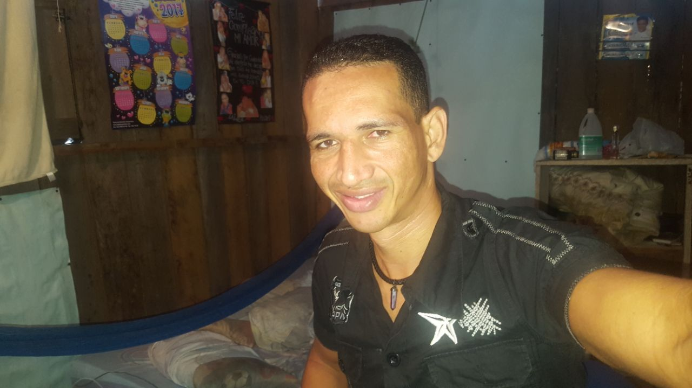

descubriendo el mundo


¿Por qué viajar?
23 agosto 2017date_range Tumaco (colombia)location_on Estos son los principales beneficios de viajar: Aprender idiomas No quiero alargarme mucho sobre este aspecto porque seguramente ya eres consciente de la importancia de aprender idiomas. Para aprender un idioma, la mejor manera de hacerlo es viajar al extranjero para poder practicarlo. Este tipo de experiencias aceleran el aprendizaje y sobretodo, se aprende de forma divertida. Pero, antes de viajar no te olvides de aprender o repasar las bases del idioma para poderte desenvolver con facilidad durante el viaje. MosaLingua ha creado una aplicación que permite aprender rápidamente y desenvolverse sin problemas cuando se viaja al extranjero. Te aconsejo que también te descargues los manuales de conversación gratuitos para aprender inglés, italiano, alemán, francés y portugués, ya que contiene las frases y palabras clave que necesitarás cuando estés de viaje. Además, aprender un idioma significa aprender una nueva cultura y una nueva forma de pensar. ¡Todo esto se aprende viviendo con nativos! Ampliar tu propia visión del mundo y de la vidaDeja tu comentario


Perfil del autor
Hola me llamo JAIRO LAINER MORENO tengo 34 años de edad soy oriundo de tumaco (colombia) estoy entrando entrando a este fascinante y complejo desmasiado complejo diria yo mundo del desarrallo WEB este es mi primer trabajo sobre los frameworks (librerias) bootstrap, foundation y mi favorito materialize esperando tener una buena aprobacion por la comunidad.